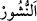
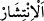

“Gündüzü de dağılıp çalışma (zamanı) yapan, O’dur.” Yâni yalnızca Allah
Teâlâ’dır.
“__WORD__ (gündüz)” ışığın yayıldığı vakittir. Şerîatta ise fecrin doğmasından güneşin
batmasına kadar olan zamandır. Aslında ise güneşin doğuşundan batışına kadar geçen
zamandır.
“__WORD__ ya “__WORD__ (yayılmak)” mânâsınadır. Yâni Allah gündüzü insanların maişet
temini ve rızık talebi için yayılma ve çalışma zamanı kıldı, demektir. Nitekim Allah
Teâlâ: “Geceleyin dinlenesiniz ve gündüzün Allah’ın lütfunu arayasınız...” (el-
Kasas, 28/73) buyurmuştur. Ya da “__WORD__ ölüyü diriltmek anlamındadır. Yâni tıpkı
ölülerin diriltilmesi gibi bu uyku ve istirahatin peşinden Allah gündüzü bir diriliş
zamanı yaptı, demektir. Mübalağa yoluyla gündüz bizzat dirilişe benzetilmiştir.
Âyette uyku ve uyanıklığın, ölüme ve tekrar diriltilmeye bir örnek olduğuna işâret
vardır.
Lokman (a.s.)’ın oğluna şöyle nasihat ettiği nakledilmiştir: “Ey oğulcuğum! Uyuduğun
ve uyandırıldığın gibi ölür ve diriltilirsin.”
Mesnevî’de der ki:
Uykumuz ölüme kardeş olduğuna göre
Bu kardeşe bakıp o kardeşi tanımak gerek
Âyette zarureti, yâni bedenin gevşekliğini giderecek kadar uyumaya ruhsat vardır.
Büyüklerden birisi şöyle demiştir: Uyku beden için bir rahatlıktır, mücâhedeler
bedeni yorar. Bu iki şey birbirine zıttır. Hakikatte uyku, kalbe âid duyu organlarının
açılması için zâhiri duyu organlarının kapatılmasıdır. Uykunun hikmeti şudur: İnsandaki
kudsî ruh, rabbânî latîfe veya nefs-i nâtıka, bu süflî cisimde gerçekten yabancı/garip;
onun ıslâhı, onun faydalarını celb ve zararlarını def etmekle meşgul; kişi uyanık olduğu
sürece bedende mahpustur. Kişi uyuduğu zaman o, asıl mekânına ve kendine âid yere
döner. Ruhlarla karşılaşır, mânâları kavrar. Melekût âlemine varınca, şehâdet âleminde
gördüğü şeylerin misallerini ve bunların mânalarına muttali olur, gayba âid bilgileri
alır. Böylece rahatlar. İşte rüyâ tabirindeki sır da budur.
Nefsiyle mücâhede eden kimse uyku ve istirahatı terkettiği zaman üzerindeki dört
unsur; toprak, su, ateş ve havanın cüzleri erir. Bu durumda kalbden hicab/manevi perde
kalkar ve kalb gözüyle melekût âlemine bakar ve Rabbine iştiyak duyar.
Bazen maksûdunu uykuda iken görür. Nitekim anlatıldığına göre Şâh Şücâ otuz sene
uyumamıştı. Tesadüfen bir gece uyudu, rüyâsında Hak Sübhânehu ve Teâlâ’yı gördü.
Bundan sonra o, yanında bir yastık taşır, her nerede uykusu gelse yatar uyurdu. Sebebi
sorulunca şu şiiri söyledi:
Kalbimin sürûrunu uykumda gördüm.
Bu yüzden uyuklamayı ve uykuları sevdim.